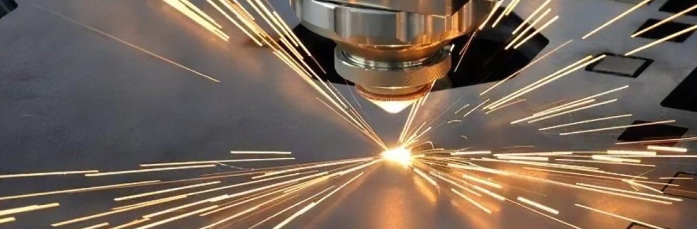
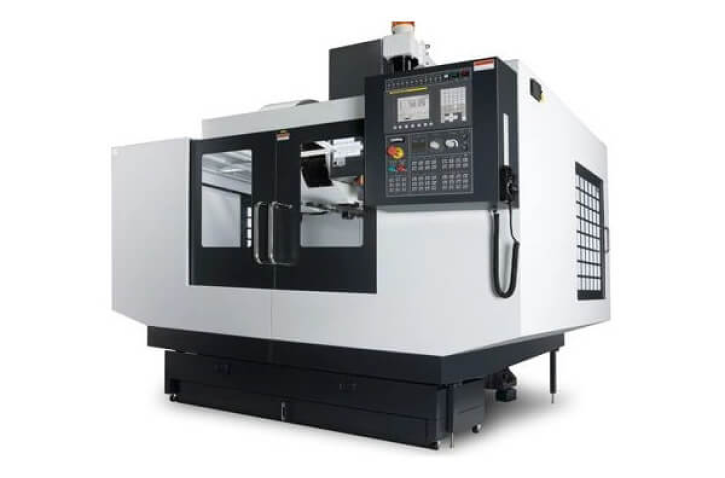

Computer-controlled cutting
Laser cutting machine safe operation precautions
Metalwork
1.Learn how to keep safety
1. Comply with the general cutting machine safety operating procedures,
should be in strict accordance with the laser starting procedure to open the
laser cutting machine;
2. The operation of the laser cutting machine should be professionally
trained and familiar with the structure, performance, operation process and
control panel of the equipment;
3. Wear the protective equipment required for the operation of the machine
according to the regulations, and avoid the damage caused by the laser on
the eyes during operation, and wear protective glasses;
4. Some materials need to be handled carefully, and do not process at will
before it is clear whether some materials can be produced by laser cutting
machine, so as to avoid toxic fumes and potential dangers;
5. When the equipment is working, the operator shall not leave the work post
or be taken care of without permission, and should be powered off or shut
down;
6. Fire extinguishing facilities should be placed within reach, and the
laser or optical brake should be turned off after the processing is
completed;
7. Do not place flammable materials such as paper and cloth around the
machine studio to prevent fire;
8. The operator is required to have the ability to respond to emergencies.
If abnormal conditions occur during processing, the machine should be shut
down immediately and troubleshooting or repair in time.
9. Before and after the laser cutting machine is used, the equipment should
be checked to ensure the surrounding environment of the machine and its own
safety and specifications, so as to facilitate the machine to work;
10. When using the gas cylinder, the welding wire should be avoided,
resulting in leakage. The use and transportation of gas cylinders shall
comply with the regulations for the supervision of gas cylinders. The gas
cylinder should avoid exposure to the sun and placed near the fire source,
and the operator should stand on the side of the nozzle when activated to
avoid accidents;
11. When the equipment is repaired, it should be operated in strict
accordance with the high-pressure safety regulations;
12. After starting the machine, manually start the machine in the X and Y
directions at low speed to check whether the equipment is abnormal;
13. After the input of the new workpiece program, a trial run should be done
and its operation should be checked;
14. The equipment should pay attention to the stability of the machine when
working, and should check whether the machine is fixed in advance to avoid
the occurrence of slippage collision;
15. Equipment should be regularly maintained, daily, weekly, monthly, every
six months should be carried out large and small maintenance and
maintenance.
2.Learn different kind of material which can be manufacture by laser cutter
Metal is the most commonly used material for laser cutting. This is due to
characteristics such as durability, strength and customisability. In
general, laser cutting is suitable for all metals. However, characteristics
such as thickness and reflection characteristics can affect the viability of
the cutting process. Thick metals require very powerful laser cutting. In
addition, reflection characteristics are a limiting factor for laser
cutting. Therefore, metal laser cutting materials with reflective
characteristics are more difficult to cut sheet metal processing.
1.The process starts with a CAD (Computer Aided Design) file that contains
the exact dimensions and specifications of the required components. For
example, use the most appropriate vector CAD file format AI, EPS, SVG, EPS,
DXF and most other laser control software support.
2.Export the CAD file and then load it into a computer-controlled laser
cutting machine to guide the laser beam onto the surface of the metal plate.
3.The laser beam is generated by a powerful laser source, such as a CO2 or
fiber laser, that heats the metal to the melting point, effectively cutting
the material along the programmed path.
4.The intense heat of the laser beam then ensures a clean, precise cut while
minimising deformation or thermal damage to the surrounding material.
Laser cutting is a multifunctional process that can be used to cut a variety
of metals of different thicknesses. Some metals that are commonly cut using
laser cutting technology include:
1. steel
Laser cutting is very effective for cutting various types of steel,
including carbon steel, stainless steel and alloy steel. It can precisely
cut steel plates from thin to thick. Laser cutting is particularly suitable
for cutting stainless steel due to its ability to make clean, high-quality
cuts with minimal heat-affected zones. Stainless steel is commonly used in
industries such as food processing, medical devices and automotive
manufacturing, where precision and hygiene are critical.
2. aluminum
Aluminum is another popular laser cutting metal due to its light weight,
corrosion resistance and versatility. Laser cutting can be used to cut
aluminum sheets of different thicknesses, making them suitable for
applications such as aerospace components, signage and building elements.
3. copper
Cutting copper has traditionally been challenging using laser technology due
to its high reflectivity and thermal conductivity, but advances in laser
technology have made it possible to cut copper accurately and efficiently.
Laser cutting is commonly used to manufacture copper components in the
electronics, telecommunications and electrical industries.
4: Brass
Laser cutting is also suitable for cutting brass, a popular copper-zinc
alloy known for its attractive appearance and corrosion resistance. Brass is
commonly used in architectural applications, decorative elements, and
Musical Instruments that require complex design and precise cutting.
5. Nickel alloy
Laser cutting is capable of cutting nickel alloys such as Inco and Monel
alloys, which are known for their high temperature and corrosion resistance.
These alloys are commonly used in aerospace, chemical processing, and Marine
applications that require precise machining and manufacturing.

How does a laser cut
...
CNC
Introducing CNC
http://baike.baidu.com/l/ckUEPpWc
CNC machine tool is the abbreviation of computer numerical control
machine tools, which is an automatic machine tool equipped with a
program control system. The control system can logically process the
program specified with control code or other symbolic instructions, and
decode it, represent it with coded numbers, and input it into the
numerical control device through the information carrier. After
calculation and processing, various control signals are sent by the
numerical control device to control the action of the machine tool, and
the parts are automatically processed according to the shape and size
required by the drawing.
Technology application
CNC machine tool is an automatic machine tool equipped with a program
control system, which can make the machine tool move and process parts
according to the programmed program. It integrates the latest
technologies such as machinery, automation, computer, measurement,
microelectronics, etc., and uses a variety of sensors, and the sensors
used in CNC machine tools mainly include photoelectric encoders, linear
gratings, proximity switches, temperature sensors, Hall sensors, current
sensors, voltage sensors, pressure sensors, liquid level sensors,
resolvers, inductive synchronizers, speed sensors, etc., which are
mainly used to detect position, linear displacement and angular
displacement, speed, pressure, temperature, etc.
1.
The requirements of CNC machine tools for sensors
1) High reliability and strong anti-interference;
2) Meet the requirements of precision and speed;
3) Easy to use and maintain, suitable for the operating environment of
the machine tool;
4) Low cost. Different types of CNC machine tools have different
requirements for sensors, generally speaking, large machine tools
require high speed response, and medium and high-precision CNC machine
tools mainly require precision.
2.
Application of induction synchronizer
The inductive synchronizer is made by using the principle that the
mutual inductance of two planar windings changes with different
positions. Its function is to convert angular or linear displacement
into the phase or amplitude of induced electromotive force, which can be
used to measure linear or angular displacement. According to its
structure, it can be divided into two types: linear type and rotary
type. The linear induction synchronizer is composed of two parts: a
fixed length and a sliding rule, the sliding ruler is installed on the
machine tool bed, and the sliding rule is installed on the moving parts
and moves together with the workbench; The stator of the rotary
induction synchronizer is a fixed disc, and the rotor is a rotating
disc. The inductive synchronizer has the advantages of high accuracy and
resolution, strong anti-interference ability, long service life, simple
maintenance, long-distance displacement measurement, good
manufacturability, and low cost. Rotary induction synchronizers are
widely used in rotary tables for machine tools and instruments, as well
as in various rotary servo control systems.
Conventional machine tools
Peculiarity
1. Strong adaptability to the processing object, adapt to the
characteristics of single piece production of molds and other products,
and provide a suitable processing method for the manufacture of molds;
2. High processing accuracy and stable processing quality;
3. It can carry out multi-coordinate linkage and process parts with
complex shapes;
4. When the processed parts are changed, generally only need to change
the CNC program, which can save production preparation time;
5. The machine tool itself has high precision and rigidity, and can
choose a favorable processing amount and high productivity (generally
3~5 times that of ordinary machine tools);
6. The machine tool has a high degree of automation, which can reduce
labor intensity;
7. It is conducive to the modernization of production management. CNC
machine tools use digital information and standard code to process and
transmit information, and use computer control methods, which lays the
foundation for the integration of computer-aided design, manufacturing
and management;
8. The quality requirements for operators are higher, and the technical
requirements for maintenance personnel are higher;
9. High reliability.
CNC machine tools compared to traditional machine tools
1. It is highly flexible
Machining parts on CNC machine tools, mainly depends on the processing
program, it is different from ordinary machine tools, it does not have
to be manufactured, many molds, fixtures are replaced, and there is no
need to readjust the machine tool frequently. Therefore, CNC machine
tools are suitable for the frequent replacement of processed parts, that
is, suitable for the production of single pieces, small batches of
products and the development of new products, thereby shortening the
production preparation cycle and saving a lot of process equipment
costs.
2. High processing accuracy
The machining accuracy of CNC machine tool can generally reach
0.05-0.1mm, CNC machine tool is controlled in the form of digital
signal, CNC device outputs a pulse signal every time, then the moving
parts of the machine tool move a pulse equivalent (generally 0.001mm),
and the reverse clearance of the machine tool feed transmission chain
and the average error of the screw pitch can be compensated by the CNC
device, therefore, the positioning accuracy of CNC machine tool is
relatively high.
3. The processing quality is stable and reliable
Processing the same batch of parts, in the same machine tool, under the
same processing conditions, using the same tool and processing program,
the tool trajectory is exactly the same, the consistency of the parts is
good, and the quality is stable.
4. High productivity
CNC machine tools can effectively reduce the machining time and
auxiliary time of parts, and the spindle sound velocity and feed range
of CNC machine tools are large, allowing machine tools to carry out
powerful cutting with large stock removal volumes. CNC machine tools are
entering the era of high-speed machining, and the rapid movement and
positioning of moving parts of CNC machine tools and high-speed cutting
processing have greatly improved productivity. In addition, when used in
conjunction with the tool magazine of a machining center, it is possible
to perform continuous processing of multiple processes on a single
machine, reducing the turnaround time between processes of semi-finished
products and improving productivity.
5. Improve working conditions
Before the CNC machine tool is adjusted, the program is entered and
started, and the machine tool can be automatically and continuously
processed until the end of processing. What the operator has to do is
only the input of the program, editing, parts loading and unloading,
tool preparation, observation of processing status, inspection of parts,
etc., the labor intensity is greatly reduced, and the labor of the
machine tool operator tends to be intellectually oriented. In addition,
machine tools are generally combined, both clean and safe.
6. Modernize production management
The processing of CNC machine tools can accurately estimate the
processing time in advance, and the tools and fixtures used can be
standardized, modernized management, and easy to realize the
standardization of processing information, which has been organically
combined with computer-aided design and manufacturing (CAD/CAM), and is
the basis of modern integrated manufacturing technology
1. CNC milling machine
Numerical control milling machine is a machine that has similarities
with numerical control milling machines. However, it is usually used to
process softer materials, and its accuracy may be slightly lower than
that of CNC milling machines.
A typical CNC milling machine consists of a mechanical base, a power
supply, a spindle, a stepper driver, a stepper motor and a controller.
Compared with traditional processing methods, CNC milling machines have
the advantages of improving productivity, improving accuracy and
reducing material waste, so that products can be produced faster.
Similar to CNC milling machines, CNC milling machines are available in a
variety of shaft configurations, ranging from three to six axes.
Entry-level CNC milling machines typically utilize a 3-axis system to
carve the workpiece into the desired shape. In addition, rotary tool
accessories (4 axes) can be purchased separately for machining curved
workpieces.
CNC milling machines excel at using computer numerical control to mill
spindles and machine paths, enabling the ability to work on a variety of
materials such as aluminum, steel, plastic, wood, composite materials
and foam to achieve the desired final design and shape.
Apply
CNC milling machines are highly versatile machines suitable for cutting
complex shapes and are used in a wide variety of applications,
including: Carved wood furniture, Decorative, molding, Interior and
exterior decoration, Door carving, placard, Musical instrument
2. CNC drilling machine
CNC drilling machines are automatic drilling machines that can punch
precise and complex holes in the workpiece. They are equipped with a
mechanically rotating drill bit that can penetrate the workpiece
radially to create a cylindrical hole. The design of the drill bits
causes scrap material (called chips) to fall off the workpiece. There
are several types of drill bits available for different applications,
including screw machine bits, deep hole bits, centering bits and clamp
reamers.
CNC drilling machines automatically control parameters such as spindle
speed, feed speed, cut rate and depth of cut based on instructions
provided by the CNC programmer. These machines can process materials at
much higher speeds than traditional manual drilling techniques. These
machines are equipped with intelligent tool exchange and positioning
technology that helps increase productivity.
Apply
CNC drilling machines are used in various industries, including:
Automobile manufacturing, shipbuilding, spaceflight, Construction machinery,
Mold making, Woodworking and furniture making
4. CNC milling machine
CNC milling machines utilize high-speed rotating multi-point cutting tools
to precisely remove material from workpieces that are usually held in place
to form the desired shape.
5. CNC plasma cutting machine
CNC plasma cutting machines provide precise cutting. It does this by
utilizing a discharge arc, similar to a plasma torch, that ionizes the air
and melts the material at the point of contact with the arc.
6. CNC laser cutting machine
CNC laser cutting machines and CNC plasma cutting machines have similar
ability to cut tough materials. However, unlike plasma cutters that utilize
ionized gas, CNC laser cutters use highly focused laser beams.
7. CNC discharge processing machine
Numerical control discharge machines (EDMs), often referred to as spark CNC
machines, use electrical sparks to manipulate and shape materials. This EDM
process can also be called wire burning, die opening, spark machining or
spark corrosion.
8. CNC grinding machine
CNC grinding machines use abrasive tools to achieve smooth and precise
finish of processed products. It is commonly used in drive shafts,
camshafts, ball bearings and other workpieces that require a precise and
polished surface.
13. CNC bending machine
A CNC press brake consists of a computer-controlled press and a die that
applies the necessary pressure to bend the workpiece into the desired shape.
Primarily used in the sheet metal industry, these machines can accurately
bend or crumple sheet metal at pre-programmed angles. In addition, CNC press
brakes can also be used to bend metal bars and tubes.
12. Automatic tool change
CNC machine The Automatic Tool Changer (ATC) is a variant of various types
of CNC machines. This feature allows for quick and efficient replacement of
cutting tools within a CNC machine. It allows for seamless transitions
between different types of cutting tools or replacement of damaged or worn
tools. The ability to automate the tool change process can increase
production speed and minimize machine downtime.
11. 3D printers
CNC machines are known as 3D printers that are used to create
three-dimensional workpieces by layering materials based on digital designs
or models. To prepare the 3D design, the operator uses CAD software, which
is then sliced into 2D layers by CAM software to generate the commands
needed to control the printing process.
9. CNC water jet cutting machine
CNC water jet cutting machines, as the name suggests, utilize high-pressure
water jets, and in some cases additional abrasives, to efficiently cut a
variety of materials. These waterjet cutters can handle both 2D and 3D cuts
and are good at cutting high thickness materials.
10. CNC take-and-place robot
In the manufacturing industry, pickup and drop robots have gained widespread
popularity because they are specifically designed for repetitive tasks.
These CNC machines eliminate the need to manually handle workpieces,
reducing human interference and associated risks.


Each step in the CNC machining process has a crucial impact on the final
quality and stability of the part. Therefore, controlling the processing
process is the key. First of all, it is necessary to develop a scientific
process and clarify the operational requirements and quality standards of
each step. Secondly, to ensure the accuracy and stability of machine tools,
tools, fixtures and other equipment. This includes carrying out regular
maintenance and inspection of the equipment, timely replacement of worn
parts, and keeping the equipment in good condition. At the same time, it is
necessary to optimize the cutting parameters, such as cutting speed, feed
rate and cutting depth, to reduce the cutting force, thermal deformation and
residual stress, and improve the machining accuracy and stability of the
parts.
The choice of materials has an important impact on the quality and stability
of CNC machined parts. To choose a material suitable for CNC machining,
consider its mechanical properties, thermal stability, corrosion resistance
and other factors. At the same time, according to the use and requirements
of the parts, choose the appropriate material grade and heat treatment
process.

Machine type
3. CNC lathe
The CNC lathe uses a single point cutting tool to remove material from the
rotating workpiece and shape it to the desired specifications. Compared with
manual lathes, CNC lathes improve the speed and accuracy of finished product
manufacturing.
Laser Cutter
3.Make sure the machine ,material
CNC Milling Machine Safety Precautions
1. Wear appropriate protective gear CNC milling machine operators must
wear proper protective gear, including safety glasses, ear protectors,
and gloves, before starting any work. The gear protects against flying
debris, loud noises, and the potential risk of hand injuries.
2. Familiarize yourself with the machine When operating a CNC milling
machine before it, it is essential to read and understand the user
manual carefully. Familiar with machine operation, control, emergency
stop function and maintenance procedures. Operators should be provided
with proper training to ensure that they are capable of using the
machine.
3. Fix the workpiece and tools Before starting the milling process, be
sure to double-check that the workpiece and tool are securely fastened.
When the machine is running, loose material can turn into dangerous
projectiles, posing a risk to both the machine and the operator.
4. Use the correct speed and feed Look at the specifications of the CNC
milling machine to determine the appropriate speed and feed for the
material being machined. Using incorrect speeds and feeds can lead to
tool breakage, poor surface finish, and potential accidents.
5. Minimize distractions and stay focused When operating a CNC milling
machine, it's crucial to minimize distractions and stay focused on
the task at hand. Avoid using your phone or engaging in irrelevant
conversations, as distractions can lead to mistakes or accidents.
6. Inspect and maintain the machine regularly Perform regular
inspections and maintenance of the equipment CNC milling machine to
ensure that it is in working order. Inspect for loose parts, damaged
cables, and worn tools. Proper maintenance will help prevent breakdowns
that can lead to accidents.
7. Do not put your hands inside the machine while it is running Never
put your hand inside the machine while it is running, or attempt to
remove chips or debris with your bare hands. Use appropriate tools or
wait until the machine stops and is considered safe to clean.
8. Use the right machining strategy Follow the recommended machining
strategy to minimize the risk of accidents during milling operations.
Factors such as toolpath, tool mesh, direction of cut, and depth of cut
are considered to ensure safe and efficient operation.
9. Emergency stop Make sure all operators understand where the emergency
stop button is and how to use it. In the event of an emergency or any
dangerous situation, the operator should know how to stop the machine
immediately to prevent further injury.
10. Regular training and safety audits Finally, regular training
sessions and safety reviews are conducted to reinforce safe operating
practices and address any concerns or issues with operators. Stay
up-to-date with the latest safety guidelines and regulations to ensure a
safe working environment for everyone involved.
By implementing these safety precautions and staying vigilant, operators
can significantly reduce the risk of accidents while using CNC milling
machines. Remember, in any machining operation, personnel safety should
always be a top priority.